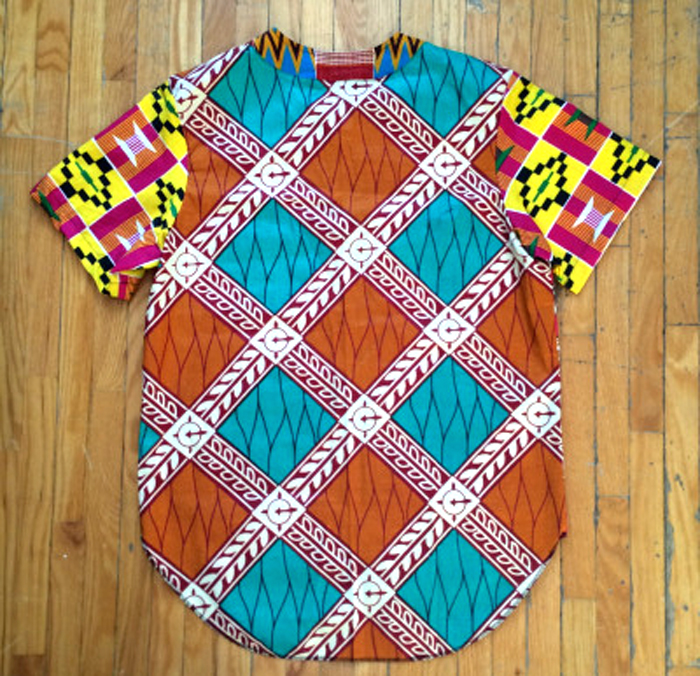
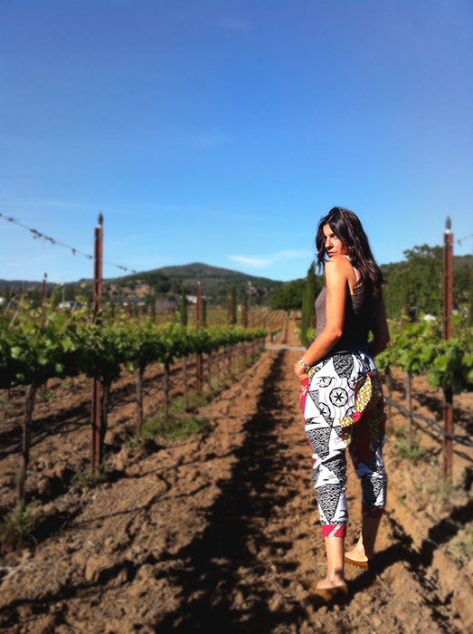

Sun Sun Creative
The vibrant colors and patterns that Francesca Nocera creates for her Sun Sun Creative clothing line out of Toronto are a burst of sunshine and a refreshing way to incorporate prints with one another. Having always been interested in fashion and printing, and coming from a music and arts background as a DJ and visual artist, Sun Sun was a way for Nocera to combine those things and make comfortable and fresh clothing fit for anyone who seeks to rock a colorful eccentric style. Sun Sun is definitely a stand out in a crowd clothing line.
The shirts and pants are an amalgamation of contrasting designs and colors. A kente cloth could be paired next to denim or a print of the solar system. Each piece is custom made and tailored to fit the person wearing it, not only in size and stature, but also in individual style. No one piece is quite like the other, and customers are involved in the design process. Most of their notability comes from the musicians and emcees who don their duds and their recent feature at Queer Fashion Week. They are certainly on the come up, spreading globally with word of mouth and on the tumblesphere and interweb, with folks near and far basking in their fashion glory.
amfm: Why did you want to start your own line? You said the idea came to you on New Years 2013 and you wanted to simply just make a pair of comfortable pants. Had you always been into fashion and was designing something on your personal radar?
sun sun: I started my own line because I love fabric, clothes and fashion. I’ve been printing silk screen shirts and hoodies for years. Fashion has always been on my radar for sure, but I never thought I would learn how to make clothes from scratch. So when I got the idea to make a comfortable pair of pants, I had to figure out how to make that happen. I’m a visual artist as well so I’ve always been into art.
amfm: What were those first pair of pants like and how did the line evolve from there? What about colorful patterns and prints do you like and why are you drawn to them? What were people's reactions to them?
sun sun: The first pair was similar to the pants I make now, some slight changes here and there, using different fabrics and small details altered. I love patterns and prints, and bright colours. It’s different - makes individuals stand out amongst the regulars. I try to make some clothes that are chill too, mostly black with just a splash of colour. People seem to like the clothes, they are comfortable and look fresh. A lot of people love the pattern combinations and colour schemes.amfm: You just showed at Queer Fashion Week and Sun Sun is a line of androgynous clothing. Why was this something important to you? To make conscious queer clothing? Did you set out to do so, or did it just happen to be so because you are queer and because of your taste?
sun sun: Androgynous clothes are important to me because it’s a topic that I live with. Shopping is kinda a issue sometimes with family or the world in general, depending what country you are in. Being in a girl body and only wanting to wear boy’s clothes is kinda an issue sometimes for other people. I wanted to create a clothing line that says, if you like the clothes wear them regardless of your gender. I didn’t set out to make queer clothing, I am a queer person and I happen to make art, music and clothes. sun sun is for everyone.
amfm: Each shirt and pants are custom made, how does that process work? Do you decide upon the fabric and color palettes or do people have some sort of say in the design process?
sun sun: Yea, every item is custom-made to order. People usually send me a email and we talk about what they are looking for. Some people check out my tumblr and send me pics of stuff they like of mine. I try to make them a bit different. I sometimes send people some fabric pics to see what they looking for. Or if someone is in Toronto, they just come through to my studio and we pick out fabrics together. Once I get the order, I cut the pattern out and give it to my sewer. When she is done, I pick it up and mail it out. It’s all done here in Toronto.
amfm: What has been the craziest design you have done?
sun sun: The craziest design was the first mash up pair I made for Samson, one of my best customers. He asked me for the kente patterns all over. Before that I would only do bits of kente with majority stretch denim.
amfm: You cited water as something that inspires your designs, how is water inspiring for you?
sun sun: Water inspires me because water is a reminder to go with the flow. When you go with the flow you can create all the things you never thought possible. I never thought it was possible to create clothes from scratch that other people would want to wear it. Water also carries many magical patterns/textures and so do my clothes.
amfm: You are also a DJ, in what ways does your music influence your design and vise versa?
sun sun: Yea, I sometimes dream of outfits that my favourite musicians would want to wear. Most of them dress so royal and fresh, it’s cool to try and create outfits that match their music.
amfm: You call yourself and your line Sun Sun, what does that mean to you?
sun sun: I had a roommate out in BK years ago that gave me that name. I used to tag it around and it kinda stuck with me. He told me it meant wise old soul.
|  |  |
For more from Sun Sun Creative:
Sun Sun Creative's Website
Sun Sun Creative on Instagram
photo credits: sun sun creative